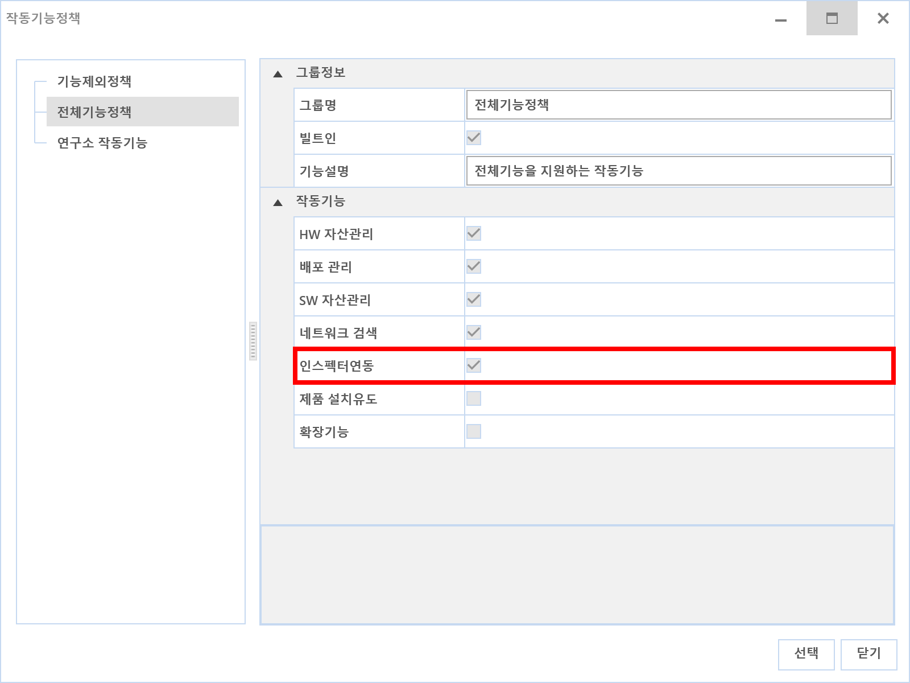
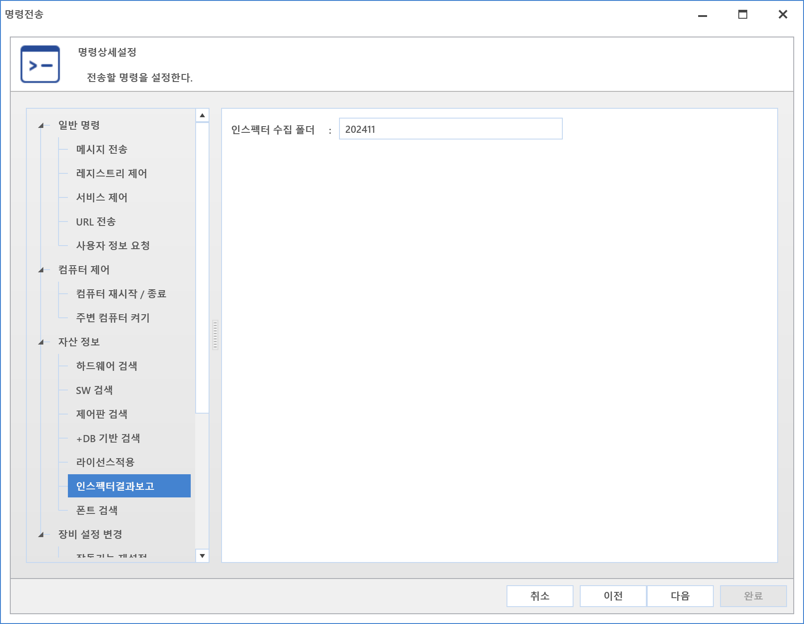

10-4-3-1. 인스펙터 결과보고
10-4-3-1. 인스펙터 결과보고
Source: https://www.sweeper.or.kr/etc/manual/10-4-3-1.html
10-4-3-1. 인스펙터 결과보고
10. 기타 ›› 10-4. 명령전송 ›› 10-4-3. 자산정보 ››


한국저작권 위원회에서 무료 배포하는 인스펙터에 의한 점검결과를 서버에 취합하기 위한 명령입니다.
설정방법
-
인스펙터 실행에 대한 사전 설정
-
[홈-환경설정-일반]의 인스펙터 탭에서 원하는 검색 옵션을 선택합니다.
-

-
작동기능에서 인스펙터 연동을 설정합니다.
-

명령방법
- 명령센터에서 "추가" 버튼을 눌러 명령을 보낼 장비 선택
- "인스펙터 결과보고"를 선택하고 수집 폴더 지정

- 명령 수행
참고사항
-
서버별 수집되는 경로
-
윈도우 서버 : C:\Program Files\SWeeper\DataServer\ReportFile\Inspector\수집폴더명(ex 202011)
-
리눅스 서버 : /netrix/ReportFile/DataServer/Inspector/수집폴더명(ex 202011)
-
사용자 UI 화면
-
지정한 옵션에 따라 점검이 시작됩니다.
-

-
인스펙터 실행 옵션이나 개별 실행에 대한 설명은 "한국저작권위원회" 홈페이지를 참고하시기 바랍니다.
-
http://www.copy112.or.kr/
-
Mac Agent 는 해당 명령을 지원하지 않습니다.
© Copyright SWeeper Inc.. All Rights Reserved